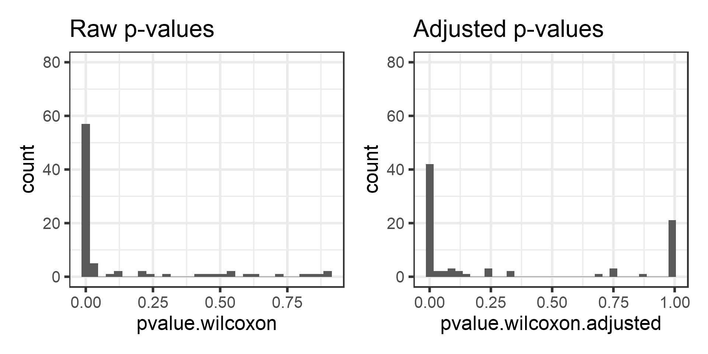
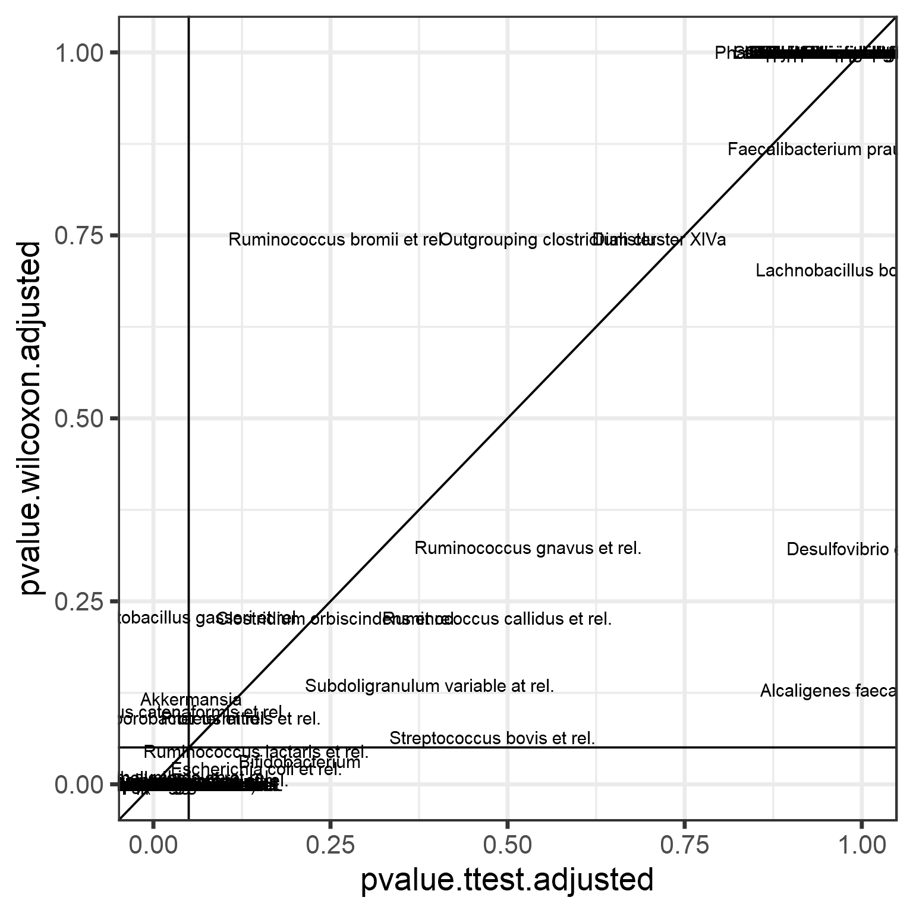
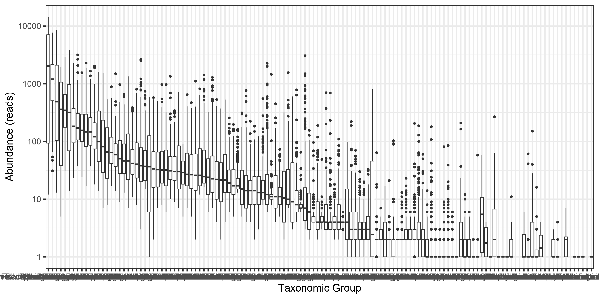
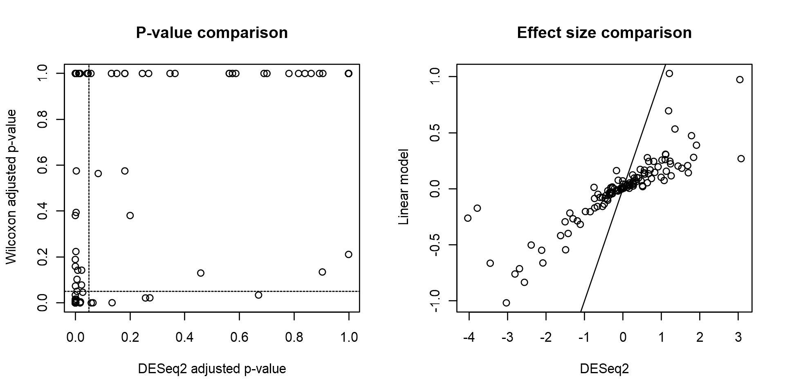

Differential abundance testing
4 February 2022
Differential abundance testing: univariate data
This section covers basic univariate tests for two-group comparison, covering t-test, Wilcoxon test, and multiple testing.
The following example compares the abundance of a selected bug between two conditions. Let us assume that the data is already properly normalized.
Let us load example data
library(microbiome)
data(dietswap)
d <- dietswap
# Pick microbial abundances for a given taxonomic group
taxa <- "Dialister"
# Construct a data.frame with the selected
# taxonomic group and grouping
df <- data.frame(Abundance = abundances(d)[taxa,],
Group = meta(d)$nationality)Compare the groups visually using a boxplot (left). However, we observe that the abundances are in absolute scale and therefore the comparison is not clear. Let us try the log10 transformation. Now, the data contains many zeros and taking log10 will yield infinite values. Hence we choose the commonly used, although somewhat problematic, log10(1+x) transformation (right).
p1 <- ggplot(df, aes(x = Group, y = Abundance)) +
geom_boxplot() +
labs(title = "Absolute abundances", y = "Abundance\n (read count)")+ theme(plot.title = element_text(size=18))
# Let us add the log10(1+x) version:
df$Log10_Abundance <- log10(1 + df$Abundance)
p2 <- ggplot(df, aes(x = Group, y = Log10_Abundance)) +
geom_boxplot() +
labs(title = "Log10 abundances", y = "Abundance\n (log10(1+x) read count)")+ theme(plot.title = element_text(size=18))
library(patchwork)
print(p1 + p2)The groups seem to differ. Let us test the difference statistically. First, let us perform t-test, which is based on Gaussian assumptions. Each group is expected to follow Gaussian distribution.
Significance p-value with t-test:
print(t.test(Log10_Abundance ~ Group, data = df)$p.value)## [1] 0.02554997Now let us investigate the Gaussian assumption in more detail. Boxplots may not show deviations from Gaussian assumptions very clearly Let us try another visualization; the density plot.
p <- ggplot(df, aes(fill = Group, x = Log10_Abundance)) +
geom_density(alpha = 0.5)
print(p)Apparently, the data is not Gaussian distributed. In such cases, a common procedure is to use non-parametric tests. These do not make assumptions of the data distribution but instead compare the ordering of the samples.
So, let us look at the significance p-value with Wilcoxon test (log10 data):
print(wilcox.test(Log10_Abundance ~ Group, data = df)$p.value)## [1] 0.02979053But since the test is non-parametric, we can as well use the original absolute abundances since the log transformation does not change sample ordering on which the Wilcoxon test is based.
Let us verify that the absolute abundances yield the same p-value for Wilcoxon test:
print(wilcox.test(Abundance ~ Group, data = df)$p.value)## [1] 0.02979053Let us compare how much the results would differ in the whole data between t-test and Wilcoxon test. To remove non-varying taxa that would demand extra scripting, let us for demonstration purposes now focus on core taxa that are observed in more than 20% of the samples with more than 3 reads.
# Core taxa to be tested
test.taxa <- core_members(d, prevalence = 20/100, detection = 3)
# Calculate p-values with the two different methods for each taxonomic unit
pvalue.ttest <- c()
pvalue.wilcoxon <- c()
for (taxa in test.taxa) {
# Create a new data frame for each taxonomic group
df <- data.frame(Abundance = abundances(d)[taxa,],
Log10_Abundance = log10(1 + abundances(d)[taxa,]),
Group = meta(d)$nationality)
pvalue.ttest[[taxa]] <- t.test(Log10_Abundance ~ Group, data = df)$p.value
pvalue.wilcoxon[[taxa]] <- wilcox.test(Abundance ~ Group, data = df)$p.value
}
# Arrange the results in a data.frame
pvalues <- data.frame(taxon = test.taxa,
pvalue.ttest = pvalue.ttest,
pvalue.wilcoxon = pvalue.wilcoxon)
# Note that multiple testing occurs.
# We must correct the p-values.
# let us apply the standard Benjamini-Hochberg False Discovery Rate (FDR)
# correction
pvalues$pvalue.ttest.adjusted <- p.adjust(pvalue.ttest)
#pvalues$pvalue.ttest.adjusted <- p.adjust(pvalues$pvalue.ttest)
pvalues$pvalue.wilcoxon.adjusted <- p.adjust(pvalue.wilcoxon)Compare the p-value histograms between raw and adjusteed p-values.
library(reshape2)
library(tidyverse)
pvalues$pvalue.wilcoxon<- as.numeric(pvalue.wilcoxon)
p1 <- ggplot(pvalues, aes(x = pvalue.wilcoxon)) + geom_histogram(bins = 50, binwidth = .03)+
labs(title = "Raw p-values") +
ylim(c(0, 80))
p2 <- ggplot(pvalues, aes(x = pvalue.wilcoxon.adjusted)) +
geom_histogram(bins = 50, binwidth = .03) +
labs(title = "Adjusted p-values") +
ylim(c(0, 80))
print(p1 + p2)
Now compare these adjusted p-values between t-test and Wilcoxon test. Let us also highlight the p = 0.05 intervals.
p <- ggplot(data = pvalues,
aes(x = pvalue.ttest.adjusted,
y = pvalue.wilcoxon.adjusted)) +
geom_text(aes(label = taxon)) +
geom_abline(aes(intercept = 0, slope = 1)) +
geom_hline(aes(yintercept = 0.05), shape = 2) +
geom_vline(aes(xintercept = 0.05), shape = 2)
print(p)
Linear models: the role of covariates
This section provides a brief hands-on introduction to the practical motivations and use linear (and generalized linear) models.
Let us compare two groups with a linear model. We use Log10 abundances since this is closer to the Gaussian assumptions than the absolute count data. We can fit a linear model with Gaussian variation as follows:
res <- glm(Log10_Abundance ~ Group, data = df, family = "gaussian")Let us investigate model coefficients
kable(summary(res)$coefficients, digits = 5)| Estimate | Std. Error | t value | Pr(>|t|) | |
|---|---|---|---|---|
| (Intercept) | 0.64825 | 0.02877 | 22.53405 | 0 |
| GroupAFR | 0.20313 | 0.04308 | 4.71530 | 0 |
The intercept equals to the mean in the first group:
print(mean(subset(df, Group == "AAM")$Log10_Abundance))## [1] 0.6482493The group term equals to the difference between group means:
print(mean(subset(df, Group == "AFR")$Log10_Abundance) -
mean(subset(df, Group == "AAM")$Log10_Abundance))## [1] 0.2031287Note that the linear model (default) significance equals to t-test assuming equal variances.
print(t.test(Log10_Abundance ~ Group, data = df, var.equal=TRUE)$p.value)## [1] 4.284318e-06An important advantage of linear models, compared to plain t-test is that they allow incorporating additional variables, such as potential confounders (age, BMI, gender..):
# Add a covariate:
df$sex <- meta(d)$sex
# Fit the model:
res <- glm(Log10_Abundance ~ Group + sex, data = df, family = "gaussian")Generalized linear models: a very brief overview
Let us briefly discuss the ideas underlying generalized linear models before proceeding to the next section.
The Generalized linear model (GLM) allows a richer family of probability distributions to describe the data. Intuitively speaking, GLMs allow the modeling of nonlinear, nonsymmetric, and nongaussian associations. GLMs consist of three elements: - A probability distribution (from exponential family) - A linear predictor η = Xβ . - A link function g such that \(E(Y) = μ = g^{−1}(η)\).
We use Poisson with (its natural) log-link. Fit abundance (read counts) assuming that the data is Poisson distributed, and the logarithm of its mean, or expectation, is obtained with a linear model.
res <- glm(Abundance ~ Group, data = df, family = "poisson")Investigate the model output:
kable(summary(res)$coefficients, digits = 5)| Estimate | Std. Error | z value | Pr(>|z|) | |
|---|---|---|---|---|
| (Intercept) | 1.49409 | 0.04272 | 34.97577 | 0 |
| GroupAFR | 1.04329 | 0.05122 | 20.36855 | 0 |
Advanced models of differential abundance
GLMs are the basis for advanced testing of differential abundance in sequencing data. This is necessary, as the sequencing data sets deviate from symmetric, continuous, Gaussian assumptions in many ways.
Sequencing data consists of discrete counts:
print(abundances(d)[1:5,1:3])## Sample-1 Sample-2 Sample-3
## Actinomycetaceae 0 1 0
## Aerococcus 0 0 0
## Aeromonas 0 0 0
## Akkermansia 18 97 67
## Alcaligenes faecalis et rel. 1 2 3The data is sparse:
hist(log10(1 + abundances(d)), 100)Long tails of rare taxa:
medians <- apply(abundances(d),1,median)/1e3
library(reshape2)
A <- melt(otu_tibble(d))## Using FeatureID as id variablesA$FeatureID <- factor(A$FeatureID, levels = rev(names(sort(medians))))
p <- ggplot(A, aes(x = FeatureID, y = value)) +
geom_boxplot() +
labs(y = "Abundance (reads)", x = "Taxonomic Group") +
scale_y_log10() +
theme_bw() +
theme(axis.text.x = element_text(angle = 90, size=6))
print(p)
Overdispersion (variance exceeds the mean):
means <- apply(abundances(d),1,mean)
variances <- apply(abundances(d),1,var)
# Calculate mean and variance over samples for each taxon
library(reshape2)
library(dplyr)
df <- melt(otu_tibble(d))
names(df) <- c("Taxon", "Sample", "Reads")
df <- df %>% group_by(Taxon) %>%
summarise(mean = mean(Reads),
variance = var(Reads))
# Illustrate overdispersion
library(scales)
p <- ggplot(df, aes(x = mean, y = variance)) +
geom_point() +
geom_abline(aes(intercept = 0, slope = 1)) +
scale_x_log10(labels = scales::scientific) +
scale_y_log10(labels = scales::scientific) +
labs(title = "Overdispersion (variance > mean)")
print(p)DESeq2: differential abundance testing for sequencing data
DESeq2 analysis can accommodate those particular assumptions about sequencing data.
# Start by converting phyloseq object to deseq2 format
library(DESeq2)
ds2 <- phyloseq_to_deseq2(d, ~ group + nationality)
# Run DESeq2 analysis (all taxa at once!)
dds <- DESeq(ds2)
# Investigate results
res <- results(dds)
deseq.results <- as.data.frame(res)
df <- deseq.results
df$taxon <- rownames(df)
df <- df %>% arrange(log2FoldChange, padj)
# Print the results; flitered and sorted by pvalue and effectsize
library(knitr)
df <- df %>% filter(pvalue < 0.05 & log2FoldChange > 1.5) %>%
arrange(pvalue, log2FoldChange)
kable(df, digits = 5)| baseMean | log2FoldChange | lfcSE | stat | pvalue | padj | taxon | |
|---|---|---|---|---|---|---|---|
| Clostridium difficile et rel. | 29.20535 | 1.91205 | 0.13432 | 14.23457 | 0.00000 | 0.00000 | Clostridium difficile et rel. |
| Mitsuokella multiacida et rel. | 51.65152 | 3.04116 | 0.28687 | 10.60107 | 0.00000 | 0.00000 | Mitsuokella multiacida et rel. |
| Klebisiella pneumoniae et rel. | 12.39749 | 1.83825 | 0.18531 | 9.91994 | 0.00000 | 0.00000 | Klebisiella pneumoniae et rel. |
| Megasphaera elsdenii et rel. | 44.16494 | 1.78333 | 0.23072 | 7.72937 | 0.00000 | 0.00000 | Megasphaera elsdenii et rel. |
| Escherichia coli et rel. | 66.93783 | 1.68345 | 0.25330 | 6.64609 | 0.00000 | 0.00000 | Escherichia coli et rel. |
| Weissella et rel. | 3.63459 | 1.53142 | 0.23140 | 6.61792 | 0.00000 | 0.00000 | Weissella et rel. |
| Serratia | 5.74035 | 3.07334 | 0.47848 | 6.42308 | 0.00000 | 0.00000 | Serratia |
| Moraxellaceae | 0.42171 | 1.70079 | 0.47147 | 3.60743 | 0.00031 | 0.00075 | Moraxellaceae |
For comparison purposes, assess significances and effect sizes based on Wilcoxon test.
test.taxa <- taxa(d)
pvalue.wilcoxon <- c()
foldchange <- c()
for (taxa in test.taxa) {
# Create a new data frame for each taxonomic group
df <- data.frame(Abundance = abundances(d)[taxa,],
Log10_Abundance = log10(1 + abundances(d)[taxa,]),
Group = meta(d)$nationality)
# Calculate pvalue and effect size (difference beween log means)
pvalue.wilcoxon[[taxa]] <- wilcox.test(Abundance ~ Group, data = df)$p.value
foldchange[[taxa]] <- coef(lm(Log10_Abundance ~ Group, data = df))[[2]]
}
# Correct p-values for multiple testing
pvalue.wilcoxon.adjusted <- p.adjust(pvalue.wilcoxon)par(mfrow = c(1,2))
plot(deseq.results$padj, pvalue.wilcoxon.adjusted,
xlab = "DESeq2 adjusted p-value",
ylab = "Wilcoxon adjusted p-value",
main = "P-value comparison")
abline(v = 0.05, h = 0.05, lty = 2)
plot(deseq.results$log2FoldChange, foldchange,
xlab = "DESeq2",
ylab = "Linear model",
main = "Effect size comparison")
abline(0,1)
Visualizing DESEQ2 results
deseq.results %>%
tibble::rownames_to_column("Taxon") %>%
filter(padj <= 0.05 & abs(log2FoldChange) >= 1.5) %>%
ggplot(aes(log2FoldChange, reorder(Taxon, log2FoldChange))) +
geom_col() +
labs(x="log2FoldChange", y="Taxon")